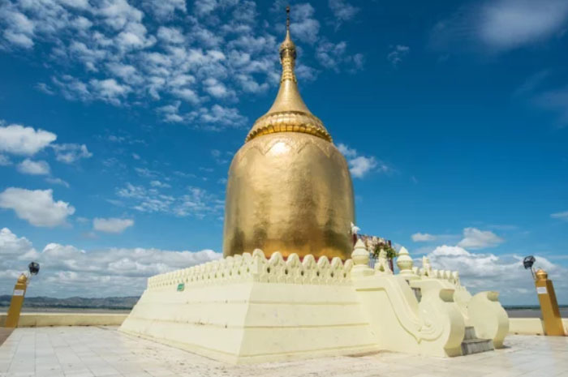

WELCOME TO THE GOLDEN LAND
Serenity Found in the Ancient Valleys
Experience a journey through time where thousands of pagodas meet the golden glow of the Irrawaddy.
The Heart of Southeast Asia
Iconic Landmarks
Myanmar is a tapestry of ancient traditions and breathtaking landscapes. Known as the "Golden Land," it offers travelers an authentic glimpse into a culture preserved through centuries. From the mist-covered mountains of Shan State to the bustling markets of Yangon, every corner tells a story of resilience, grace, and profound spirituality.
The Cultural Heart of Myanmar
Mandalay
Mandalay is more than a city; it is the spiritual soul of the nation. Founded in 1857, it served as the final royal capital of the Burmese Kingdom, leaving a legacy of artistic refinement and deep Buddhist devotion.

U Bein Bridge
Built from centuries-old teakwoodStretching gracefully across Taungthaman Lake, U Bein Bridge reflects the timeless rhythms of monastic life and the quiet beauty of Myanmar’s spiritual heart.

Mandalay Palace
The last palace of the Burmese monarchy, a sprawling citadel.Once the royal heart of the last Burmese kingdom, Mandalay Palace stands as a symbol of Myanmar’s monarchy, resilience, and cultural heritage.

Mahamuni Buddha
Mandalay’s largest pagodaThe revered Mahamuni Buddha, covered in layers of gold leaf applied by generations of devoted pilgrims, stands as one of Myanmar’s most sacred symbols of faith and devotion.

Intramuros
The historic Walled City at the core of the capital.
Chasing the Golden Hour
Bagan
Bagan's sunsets are world-famous. While climbing temples is restricted, these viewing mounds and riverside spots offer the most evocative views of the plain.

Ananda Temple
The MasterpieceKnown as the "Westminster Abbey of Burma," this perfectly symmetrical structure is famous for its four standing golden Buddhas and intricate stone carvings.

Shwezigon Pagoda
The Golden StupaOne of Bagan’s most revered golden pagodas, Shwezigon stands as a lasting symbol of early Burmese Buddhism and royal devotion.

Buphaya Pagoda
Golden Stupa by the AyeyarwadyRising gracefully along the Ayeyarwady River Bank, Buphaya Pagoda reflects the spiritual beauty and timeless landscape of ancient Bagan.
Modern Pulse, Ancient Heart
Yangon (formerly Rangoon)
Yangon, formerly Rangoon, serves as the vibrant gateway to Myanmar. It is a city of layers—where glass skyscrapers rise beside century-old teak mansions and bustling street markets hum beneath the gaze of towering stupas.

Shwedagon Pagoda
Myanmar’s Golden Sacred LandmarkMyanmar’s most sacred Buddhist site, Shwedagon Pagoda rises above Yangon with shimmering golden stupas and centuries of spiritual devotion.

Sule Pagoda
The Spiritual Heart of YangonStanding at the heart of Yangon, Sule Pagoda blends ancient spirituality with the rhythm of a modern colonial-era city.

Colonial Downtown
Yangon’s Colonial Heritage StreetsColonial Downtown preserves Yangon’s historic streetscape, where grand British-era architecture meets vibrant local life.
A Taste of Myanmar’s Living Traditions
From comforting noodle soups and savory rice dishes to traditional street snacks, Myanmar’s cuisine reflects centuries of trade, regional diversity, and rich culinary traditions shaped by rivers and kingdoms.

Mandalay Mee ShayNoodle Dish
Originating from Myanmar’s cultural capital, Mandalay Mee Shay combines rice noodles, savory meat sauce, and fragrant spices into one of the country’s most beloved noodle dishes.

MohingaBreakfast Soup
Start your day like a local with this savory fish broth noodle soup, often called Myanmar's national dish.

Mont
Known as 'Mont', these treats use local ingredients like palm sugar, coconut, and glutinous rice. Don't miss the Htoe Mont, a sticky, buttery cake that is a local favorite.
ミャンマー連邦共和国の歴史
Republic of the Union of Myanmar
From the ancient kingdoms of Bagan and Ava to the colonial era and modern nationhood,
Myanmar’s history is shaped by powerful dynasties, Buddhist traditions, and centuries of
cultural exchange across Southeast Asia.
古代
ピュー族の都市国家 （紀元前2世紀～9世紀）
中央乾燥地帯に栄え、仏教文化が発展。
モン族の王国 （紀元前3世紀～11世紀）
南部で仏教文化が栄えた。
中世
パガン王朝 （849年～1287年）
ビルマ族による最初の統一王朝。上座部仏教が広まり、多くの仏塔が建設される。
首都：パガン
スリランカとの交流→上座部仏教
1287年元の侵入で滅亡
タウングー王朝 （14世紀頃から～1752年）
ビルマ族が再統一を果たし、勢力を拡大。
首都：ペグー
上座部仏教国として発展
1558年、ミャンマー（タウングー王朝）のバインナウン王が、ラーンナー王朝の首都チエンマイ（＠タイ北部）を征服した。
16世紀：貿易の利益で繁栄
17世紀末に混乱、モン族の反乱により滅亡
コンバウン王朝 （1752年～1885年）
ビルマ族最後の王朝で、タイのアユタヤ王朝を滅ぼすなどの軍事的成功を収める。
1767年タイのアユタヤ朝を滅ぼす
1790年清の属国に
第１次ミャンマー(ビルマ)戦争(1824年～26年)：英がアラカン、アッサムを獲得
第２次ミャンマー(ビルマ)戦争(1852年～53年)：英がビルマ南部を併合(ラングーン中心)
第３次ミャンマー(ビルマ)戦争(1885年～86年)：英がビルマ北部を併合
1885年イギリスにより滅亡
近世
イギリス植民地時代 （1886年～1948年）
3度の英緬戦争を経て、イギリス領インド帝国の一部となる。
近現代・現代
ビルマ連邦 （1948年～1962年）
イギリスから独立し、民主主義国家としてスタート。
ビルマ社会主義共和国 （1962年～1988年）
軍事クーデター（ネ・ウィン将軍）により社会主義体制が導入されるがこの時の正式な国名はまだ「ビルマ連邦」のまま。
ビルマ連邦社会主義共和国（1974年1月4日～1988年9月18日）
ミャンマー連邦共和国 （1989年～現在）
軍事政権や民主化運動を経て、現在に至る。 ミャンマーの歴史は、仏教文化や民族間の交流、植民地支配、そして現代の政治的変遷が特徴的です。
現在の首都：Naypyidaw（ネピドー）※2006年にヤンゴンから遷都した、新しくてガランとした人工都市。
2021年ミャンマークーデター
クーデターの首謀者: 2021年2月に政権を覆した最高責任者は、国軍トップのミン・アウン・フライン氏です。
軍政は2023年に、新しい「政党登録法」を制定し、NLDなど40以上の主要な民主派政党を合法的に解党（資格抹消）、国民や民主派の抵抗を、軍の暴力で力ずくで抑え込みました。
2026年4月に大統領就任: クーデター直後は「国軍総司令官」や「暫定首相」として実権を握っていましたが、2026年4月3日の議会投票を経て、正式に大統領へ就任しました。
バインナウン王（在位：1551年〜1581年）
バインナウン王は、16世紀のミャンマー（ビルマ）に存在したタウングー王朝の第2代国王であり、東南アジア史上最大の帝国を築き上げたビルマ史屈指の偉大な英雄です。分裂していたビルマを第二次統一し、現在のタイやラオスにまで及ぶ広大な版図（領土）を支配しました。
第二次世界大戦期（1941〜1945年）の日本軍の関わり
1. ミャンマー（ビルマ）：植民地支配からの「解放」と「失望」
ミャンマーの独立運動家たちにとって、日本軍は最初は「解放者」でした。
三十人の志士とアウンサン：
のちに独立の父となるアウンサン将軍（アウンサンスーチー氏の父）らは、日本軍（南機関）から軍事訓練を受け、「ビルマ独立義勇軍（BIA）」を結成。日本軍と共にイギリス軍を追い出しました。
ビルマ国の独立（1943年）：
日本軍の後押しで「ビルマ国」が独立を宣言しました。しかし、これは日本軍の強い影響下にある「傀儡（かいらい）国家」であり、実質的な支配者は日本軍でした。アウンサンらは当初、イギリスを追い出すために日本を利用しましたが、誕生した「ビルマ国」が日本の言いなりであり、泰緬鉄道の建設をはじめとする日本軍の横暴（現地人の強制徴用や物資の略奪）を目の当たりにして、「これではイギリスの植民地時代と変わらない、あるいはそれ以上にひどい」と確信し、1945年の抗日蜂起へと繋がっていきました。さらに日本軍は、ミャンマーを基地としてインドへ進攻する無理な計画「インパール作戦（1944年）」を強行。これが大失敗に終わり、ミャンマーの国土は激しい戦火に巻き込まれ、多くの現地住民も犠牲となりました。
反日への転換：
実質的な日本軍の厳しい軍政や、インパール作戦による戦禍に失望したアウンサンらは、1945年に日本軍に対して反乱（クーデター）を起こし、イギリス側に寝返りました。
1945年3月27日、アウンサン率いるビルマ国防軍は日本軍に対して一斉に反日蜂起（クーデター）を敢行。イギリス軍（連合国軍）側に寝返りました。これにより日本軍はミャンマーから撤退へと追い込まれ、同年8月に敗戦を迎えました。この時に結成された「反ファシスト人民自由連盟（AFPFL）」が、戦後の1948年の完全独立を勝ち取る母体となりました。
2.アウンサン将軍の暗殺（1947年）：
アウンサン将軍はイギリスとのタフな独立交渉を成功させ、独立の約束を取り付けました。しかし、完全独立を目前にした1947年7月、政敵の手によって暗殺されるという悲劇に見舞われます。
3.「ビルマ連邦」の完全独立（1948年）：
建国の父を失う巨万の悲しみを乗り越え、アウンサン将軍の遺志を継いだAFPFLの仲間たち（ウー・ヌら）が手続きを進め、1948年1月4日に「ビルマ連邦」として悲願の完全独立を達成しました。